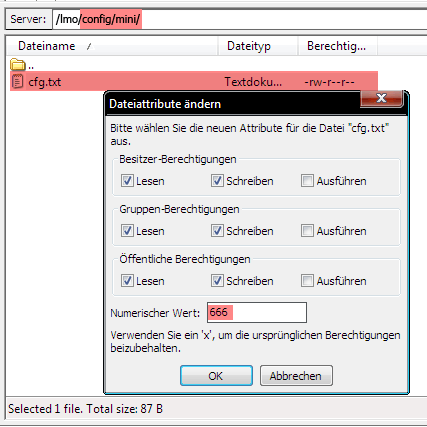

Einstiegsinformationen
1. Einleitung
Herzlich Willkommen zum neuen Liga Manager Online. Mit diesem Skript können Sie Ihren Besuchern einen Ergebnisdienst über Ihre Lieblingsligen anbieten. Die gesamte Verwaltung der Ligen läuft dabei direkt auf dem Server ab; Sie tragen nur noch die Ergebnisse ein und Ihre Besucher erhalten sofort die aktuellen Tabellen, Statistiken usw. - Keine Fremdsoftware, keine zeitraubenden Exporte und Uploads mehr!
Es ist ratsam, wenn Sie sich ein Bookmark/Favoriten in Ihrem Browser für den Adminbereich (.../lmoadmin.php) einrichten, damit Sie immer schnell darauf zugreifen können. Im User-Bereich ist aus Sicherheitsgründen kein Link auf den Adminbereich vorhanden (damit niemand auf dumme Gedanken kommt).
Die Besucher können das Skript über die Datei lmo.php starten. Wie man den LMO an seine eigene Homepage anpasst, steht im Abschnitt Anpassung des LMO. Zu jedem Link erhalten Ihre Besucher einen Tooltip, so daß Sie keine weiteren Erklärungen zur Benutzung des Skripts geben müssen.
Der Adminbereich ist, über lmoadmin.php erreichbar. Beim ersten Start melden Sie sich mit dem Namen admin und dem Passwort lmo (Mit L wie Ludwig!) an. Unter Optionen können und sollten Sie das dann sofort ändern, damit kein Unbefugter mehr Zugriff hat.
[nach oben]2. Systemvoraussetzungen
- Unix- oder Windows-Webserver (empfohlen: Apache)
- PHP 8.2 oder höher (empfohlen wird die aktuelle, vom Provider unterstützte PHP-Version)
- für den E-Mail-Versand über einen SMTP-Server (siehe Optionen): die PHP-Erweiterung OpenSSL (verschlüsselte Verbindungen, Ablage des SMTP-Passworts) oder alternativ Sodium
- empfohlen: JavaScript- und CSS-fähiger Browser
3. Installation
Dieser Abschnitt beschreibt die Neuinstallation. Wenn Sie einen vorhandenen LMO aktualisieren, lesen Sie bitte 4. Updateinstallation.
- Das ZIP-Archiv wurde bereits von Ihnen entpackt. Achten Sie darauf, dass die Verzeichnisstruktur beim Entpacken beibehalten wird, und laden Sie den Inhalt auf Ihren Webspace hoch.
- Rufen Sie nun den LMO auf, indem Sie die Adresse zum LMO in Ihren Browser eingeben. Die Installation startet automatisch
und sorgt für alle Vorraussetzungen, die der Betrieb des LMO erfordert.
Dabei legt PHP die benötigten Verzeichnisse und die Konfigurationsdateien (cfg.txt) mit den Ausgangswerten
selbst an. Ein FTP-Zugang ist dafür nicht mehr nötig.
- Auf der ersten Seite („Systemprüfung und Einrichtung“) steht „Neuinstallation“. Ist Ihre PHP-Version ausreichend, klicken Sie auf Einrichtung starten.
- Prüfen Sie das Protokoll (Einträge sind angelegt, Rechte gesetzt oder OK) und klicken Sie auf Weiter.
- Kontrollieren Sie den vorgeschlagenen Pfad und die URL zum LMO (mit [Auto] lassen sich die erkannten Werte einsetzen) und klicken Sie auf Weiter.
- Klicken Sie auf der letzten Seite auf Installationsordner jetzt löschen. Ist das nicht möglich, wird der Ordner mit chmod 000 gesperrt oder Sie erhalten den Hinweis, ihn per FTP zu löschen. Nach der Installation ist das Installationsprogramm ohnehin gesperrt.
- Im Normalfall ist der LMO nun korrekt installiert. Meldet die Installation bei Verzeichnissen oder Dateien einen Fehler
(rotes Kreuz), darf PHP auf Ihrem Server dort nicht schreiben. Setzen Sie dann einmalig mit einem FTP-Programm oder dem
Dateimanager Ihres Providers die folgenden Zugriffsrechte (chmod) und klicken Sie auf Erneut prüfen:
Zugriffsrechte bei Problemen
- Achtung: Diese Schritte sind nur notwendig, wenn die Installation Fehler meldet!
- Ändern Sie bei folgenden Dateien und Verzeichnissen die Zugriffsrechte (chmod):
- Verzeichnisse:
- 777 - das Verzeichnis ligen und alle Unterverzeichnisse
- 777 - das Verzeichnis output
- 777 - das Verzeichnis config und dessen Unterverzeichnisse (u.a. config/viewer und config/smtp). (Der Ordner config/design für gespeicherte Designs wird bei Bedarf automatisch angelegt. Dazu muss config beschreibbar sein.)
- 777 - das Verzeichnis addon/spieler/stats
- 777 - das Verzeichnis addon/tipp/tipps und alle Unterverzeichnisse
- Dateien (werden von der Installation angelegt):
- 666 - config/lmo-auth.php
- 666 - addon/tipp/lmo-tipperauth.php
- 666 - config/smtp/cfg.php und config/smtp/key.php
- 666 - Alle Dateien cfg.txt im Verzeichnis config und dessen Unterverzeichnissen
- 666 - alle Ligen im ligen-Verzeichnis und in dessen Unterverzeichnissen

- Die Datei config/init-parameters.php können Sie notfalls selbst mit einem Texteditor anlegen:
<?phpFalls Sie diese Angaben nicht wissen, fragen Sie bitte Ihren Provider.
$lmo_dateipfad='/absoluter/pfad/zum/lmo'; //Dateipfad zum LMO
$lmo_url='http://www.adresse.ihres/lmo'; //abolute URL zum LMO
?>
- Melden Sie sich anschließend im Adminbereich an (siehe 5. Login/Logout).
4. Updateinstallation
Dieser Abschnitt beschreibt die Aktualisierung eines vorhandenen LMO auf eine neuere Version.
- Sicherung: Machen Sie vor dem Update eine Sicherung Ihrer Installation. Bei Live-Systemen empfiehlt es sich, den LMO für den Zeitpunkt des Updates kurz zu sperren (z.B. über .htaccess).
- Kopieren Sie die neuen Dateien über Ihre vorhandene Installation. Ihre Einstellungen (Ordner config), Ligen und Tippspieldaten werden dabei nicht überschrieben, da sie nicht im Archiv enthalten sind.
- Starten Sie danach unbedingt das Installationsprogramm. Es ergänzt, was die neue Version zusätzlich braucht:
- Melden Sie sich im Adminbereich als Administrator an (Voll-Admin).
- Im Adminbereich erscheint, solange der Ordner install vorhanden ist, ein Hinweis mit dem Button
Update-Installation starten (nur für den Voll-Admin sichtbar, in der eingestellten Sprache). Klicken Sie darauf.
Alternativ rufen Sie im Browser install/install.php auf (z.B.
http://www.adresse.ihres/lmo/install/install.php). Ohne Anmeldung ist das Installationsprogramm gesperrt. - Auf der ersten Seite („Systemprüfung und Einrichtung“) steht „Update erkannt“. Klicken Sie auf Einrichtung starten. Vorhandene Dateien bleiben unverändert, es werden nur fehlende Verzeichnisse, Dateien und Einstellungen ergänzt (z.B. neue Einstellungen in den cfg.txt-Dateien oder die Dateien neuer Addons). Bereits gespeicherte Werte werden nicht überschrieben, auch wenn sich ein Standardwert in der neuen Version geändert hat.
- Prüfen Sie das Protokoll (Einträge sind angelegt, ergänzt oder OK) und klicken Sie auf Weiter. Pfad und Adresse sind mit Ihren bisherigen Werten vorbelegt, ändern Sie diese nur, wenn sich der Standort des LMO geändert hat.
- Klicken Sie auf der letzten Seite auf Installationsordner jetzt löschen. Klappt das nicht, löschen Sie den Ordner install per FTP. Sobald der Ordner gelöscht ist, verschwindet der Hinweis im Adminbereich wieder.
- Update mit Tippspiel: Die Zugangsdaten der Tipper werden nicht mehr in der Datei addon/tipp/lmo-tippauth.txt gespeichert, sondern in addon/tipp/lmo-tipperauth.php. Die neue Datei beginnt mit einer Schutzzeile und kann deshalb im Browser nicht mehr als Text abgerufen werden. Die Umstellung geschieht automatisch beim ersten Aufruf des LMO nach dem Update (egal ob durch einen Besucher oder den Admin): Die Tipper werden übernommen und die alte .txt-Datei wird erst nach erfolgreichem Schreiben gelöscht. Sie müssen also nichts tun: Das Installationsprogramm legt die neue Datei an und setzt die Schreibrechte selbst. Nur wenn es dort einen Fehler meldet, setzen Sie 666 manuell.
- Update bei E-Mail-Einstellungen: Die Zugangsdaten für den SMTP-Versand liegen im Ordner config/smtp/. Überschreiben oder löschen Sie diesen Ordner beim Update nicht. Geht die Datei key.php verloren, kann das gespeicherte Passwort nicht mehr entschlüsselt werden und muss neu eingegeben werden.
5. Login/Logout
Wenn Sie den Adminbereich betreten, sehen Sie zuerst eine Eingabemaske, mit der Sie sich beim System anmelden müssen. Nach der Installation ist der voreingestellte der Nutzername admin und das Passwort lmo (kleines L, kleines M, kleines O) eingestellt. Das sollten Sie aber schnellstmöglich ändern, um Unbefugten den Zutritt zu Ihrem Adminbereich zu verwehren.
Wenn Sie eingeloggt sind, haben Sie rechts oben im Menü immer auch einen Befehl Logout, mit dem Sie sich aus dem Adminbereich ausloggen können. Das sollten Sie der Sicherheit wegen auch immer am Ende einer Sitzung tun.
[nach oben]6. Rechtliches
Dieses Skript wird unter den Bestimmungen der GPL (deutsche Übersetzung ) herausgegeben. Das heißt, Sie dürfen das Skript nutzen, weitergeben und sogar verändern; Garantie wird von keiner Seite gewährt. Bitte beachten Sie, dass Copyrighthinweise auf jeden Fall erhalten bleiben müssen, es ist also nicht erlaubt, diese zu entfernen oder zu ändern.
Obwohl diese Software sorgfältig entwickelt wurde, kann für die Verwendungsfähigkeit und Fehlerfreiheit keine Haftung übernommen werden. Jede Haftung für direkte, indirekte, verursachte oder gefolgte Schäden, die durch die Verwendung dieses Programms entstehen könnten, ist ausgeschlossen. Es gibt keine Garantie!
[nach oben]